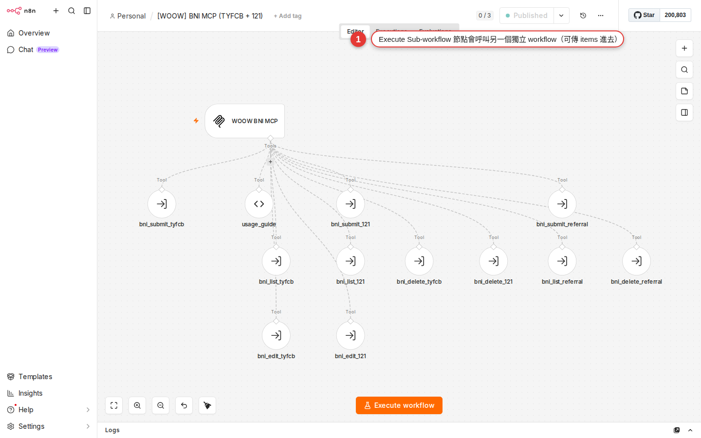

Sub-workflow: pull shared logic into its own workflow
Have you already copy-pasted the same run of steps into five workflows? One change means five edits, and you still worry you missed one. This chapter shows you how to pull shared logic out into a sub-workflow: change it in one place and every caller follows — clean enough that you will wince at your own older workflows, the ones as long as a strand of ramen.
Why learn this
You have worked through Chapter 7 and know the three node families, Chapter 15 and can use IF/Switch, Chapter 17 and have an Error workflow in place, and Chapter 18 and can shape your data cleanly. You have more and more workflows, and they look more and more alike.
Then one day you open your own n8n home page and notice:
- Those four steps for "send a Slack notification" (IF on severity → Set the title → Slack sends the message → log to Sheets) are copy-pasted into five workflows
- Your boss suddenly says every notification from now on has to carry the line "please reply within 24 hours" — that is five places to edit
- The Slack channel changes from
#alertsto#ops-alerts— five places again - One day you forget one of them, a colleague never gets the notification, and you carry the blame
That is where copy-paste development always ends up. The fix: pull those four steps out into a small standalone workflow called a sub-workflow, and have the other workflows call it with an Execute Workflow node. From then on, changing the shared logic means changing that one sub-workflow, and every caller picks up the new version automatically.
What a sub-workflow is: two roles
A sub-workflow is not a special node type, and it needs no add-on. It is an ordinary workflow, just one designed to be called by others. The whole mechanism rests on two nodes playing two roles:
| Role | Which node to use | What it does |
|---|---|---|
| The caller (parent workflow) | Execute Sub-workflow (an action node; older interfaces show it as Execute Workflow) |
Drop this node in, pick the workflow to call, hand it items, and wait for the result (or do not wait) |
| The callee (the sub-workflow) | Execute Sub-workflow Trigger (a trigger node that starts the workflow; older interfaces show it as Execute Workflow Trigger) |
Catches the items handed in above as its input; once the run finishes, the output of the workflow's last node is the return value |
The whole mechanism looks like a function call in a programming language:
- The caller passes "arguments" (items) to the sub-workflow
- The sub-workflow takes those arguments and runs
- When it finishes, the sub-workflow hands the "return value" (the last node's items) back to the caller
- The caller treats that return value as the
Execute Workflownode's output and carries on downstream
def, JavaScript's function), think of a sub-workflow as n8n's version of one. Same input → processing → output, same value in reuse.When to split out a sub-workflow, and when not to
Not every piece of logic is worth splitting out. Split too eagerly and your workspace fills with fragment workflows, which makes it harder to manage, not easier. Use this table to decide:
| Scenario | Split it out? | Why |
|---|---|---|
| The same logic (three or more nodes) appears in 3+ workflows | Split it | Copy-paste is a maintenance nightmare; split it out and one change covers them all |
| A piece of logic is complicated (10+ nodes) and even you find it messy | Split it | Split it out and it becomes a black box; the parent workflow is left with the high-level steps and reads cleanly |
| The logic is used in only one workflow | Leave it | Nothing needs sharing, and splitting it adds a jump that makes reading harder |
| Only one or two nodes (one Slack message, say) | Leave it | You save very little and gain another file to maintain |
| You want one piece of configuration managed in one place (a Slack channel name, say) | Split it | When the channel is renamed later you change the sub-workflow only, and every caller picks up the new value |
| Another team or a colleague needs to call your logic | Split it | A sub-workflow is the interface you hand other people — cleaner than letting them copy your workflow |
Hands-on: build a shared "send a Slack alert" sub-workflow
Walk through one concrete case. The logic to split out: "take an event, decide the channel and the color from its severity (error/warn/info), and send it to Slack." After that, any workflow that needs to notify calls this one.
-
Create a new workflow and name it
[Sub] Slack AlertFrom the home page, Workflows → + Create workflow. Click the workflow name in the top right and change it to
[Sub] Slack Alert. The[Sub]prefix is a convention (the naming section below covers it) that tells you at a glance this workflow is there to be called and never runs on its own. -
Pick
Execute Workflow Triggeras the trigger nodeOn the canvas press Tab or click + to open the nodes panel, search for
Execute Workflow Trigger(in the trigger family) and drag it in. This node's role is "when somebody calls me, I start here". Without it, another workflow'sExecute Workflownode finds no entry point. -
Set Input Data Mode to
Define using JSON exampleOpen the Execute Sub-workflow Trigger node and find the Input data mode dropdown. There are three official options:
Define using fields below(type in each field name and type by hand),Define using JSON example(paste a sample JSON and n8n infers the schema for you) andAccept all data(no validation, whatever arrives is taken). ChooseDefine using JSON examplehere and paste:{ "severity": "error", "message": "Database connection failed", "source": "backup-daily" }The benefit: the caller sees this schema hint in its own Execute Sub-workflow node and can assemble the data to match. That saves the back-and-forth over "what am I supposed to send you". A team that wants the interface contract written down first picks
Define using fields below; a team that wants to take anything and sort it out later picksAccept all data. -
Add an IF node to test severity
Wire in an IF node with the condition
{{ $json.severity }}equalserror. The true branch goes to "post in the#ops-errorchannel with a red icon"; the false branch gets another IF forwarn/info, or you can split three ways with a Switch node directly (Chapter 15 taught that Switch is designed for exactly this). -
Slack nodes: the channel follows the severity
Give each branch its own Slack → Message → Send node: the
errorbranch's Channel is#ops-error,warntakes#ops-warn, andinfotakes#ops-info. Build the Text field from one shared expression:[{{ $json.severity | upper }}] {{ $json.source }}: {{ $json.message }}. All three channels then get the same-looking message, and you maintain it in one place. -
Finish: let the workflow end on its own (no Respond to Webhook)
Let each of the three Slack nodes be the end of its branch. When a sub-workflow finishes, the last node's items are sent back to the caller as the return value automatically — you do not add a
Respond to Webhook(that one is for the Webhook node, not for sub-workflows). If you want to return a structure of your own, put a Set / Edit Fields node at the end and build it there (for example{ "notified": true, "channel": "#ops-error" }). -
Save (Ctrl+S) and copy the workflow ID
After saving, look at the browser address bar: it reads something like
https://n8n.woowtech.io/workflow/abc123XYZ— that last segment is the workflow ID. If the caller's Execute Workflow dropdown cannot find the workflow later, you can paste that ID straight in. Note: a sub-workflow does not need its Active toggle switched on, because it does not run from a trigger of its own — it waits to be called. -
Test it once with the "Execute step" button on the Execute Workflow Trigger node
Click Execute step in the top right of the Execute Workflow Trigger node and it does a trial run using the data you just pasted into the JSON example as its input. Of the three Slack nodes, only the
errorbranch should fire (the example's severity iserror). A Slack message actually arriving means the sub-workflow itself is sound.
Hands-on: call that sub-workflow from another workflow
The sub-workflow is built. Now open an existing workflow — "back up the database daily", say — delete the four Slack notification nodes you had stuffed inside it, and replace them with a single Execute Workflow node that calls the sub-workflow.
-
Open the workflow you are reworking
Say you have a workflow that backs up the database in the small hours: Schedule Trigger → run the backup → IF on the exit code → a Slack message each for success and failure. Take that "send to Slack" stretch apart now.
-
Delete the old Slack nodes and drag in
Execute WorkflowDelete your own IF/Set/Slack nodes entirely. Search the nodes panel for
Execute Workflow(the action one — do not mix it up with the trigger version) and wire it in after the IF node. -
Set Source to
Databaseand pick[Sub] Slack Alertin the Workflow dropdownOpen the node. Source has four modes:
Database(pick from the workflows already in the workspace, the usual choice),Local File(read a JSON file from the machine),Parameter(paste the whole workflow JSON into the node) andURL(point at a workflow URL). Keep the defaultDatabaseand find[Sub] Slack Alertin the dropdown; if it is not there, switch to another mode and point at it by hand. -
Check Wait for Sub-workflow Completion
This toggle decides whether you wait for the sub-workflow to finish and hand back a return value before carrying on. On = wait; off = carry on as soon as the call goes out (fire-and-forget, which suits a pure notification where you do not care about the result). If you want to keep working with the data the sub-workflow returns, it has to be on. The official docs do not state the default; in practice a newly created Execute Sub-workflow node has it on, so check it yourself if you want to be sure.
-
Set Mode to
Run once with all itemsMode has two options:
Run once with all items(hand every upstream item to the sub-workflow at once, and the sub-workflow runs once) orRun once for each item(each item triggers the sub-workflow separately, so it runs N times). For a one-at-a-time case like a notification, Run once with all items is fine. -
Set the items you pass: use Workflow Inputs, or reshape with a Set node first
If the sub-workflow defined a schema on its trigger (
Define using fields beloworDefine using JSON example), the Execute Sub-workflow node automatically shows a Workflow Inputs table where you fill in an expression per field, plus an Attempt to convert types toggle that handles type conversion for you. If the sub-workflow is onAccept all data, that block does not appear and the upstream items go in untouched. To change the structure substantially, add a Set / Edit Fields node first, reshape to{ severity, message, source }, and wire it in:severity: error message: {{ $json.error_message }} source: backup-dailySave, then run it once by hand with Execute Workflow to verify: the sub-workflow wakes up, Slack should get the message, and the Execute Workflow node on the caller's side shows the items that came back.
Two ways to pass parameters
How does the Execute Workflow node decide what to hand the sub-workflow? Two main modes, your choice:
| Mode | How to set it | When to use it |
|---|---|---|
| Items pass-through (straight through) | Set the Execute Workflow node's Mode to Run once with all items and change nothing else — the upstream items become the sub-workflow's input directly |
The upstream items already have the shape the sub-workflow expects (both {severity, message}, say) |
| Reshape with a Set node first | Add a Set (or Edit Fields) node in front of Execute Workflow and rewrite the items into the schema the sub-workflow expects |
The upstream data does not match the sub-workflow (different field names, missing fields, extra fields) — which is the normal case |
| Run once for each item | Set Mode to Run once for each item |
You want to call the sub-workflow separately for every single item (100 notifications means 100 sub-workflow runs) |
Run once for each item, the sub-workflow is called N times and the Executions page fills with N sub-workflow execution records. A large loop slows the whole thing down and eats your executions quota. For a genuinely large batch, batch it first and then hand it to the sub-workflow in one go with Run once with all items.Sub-workflow limits and things to watch
Splitting logic out feels good, but a few practical limits are worth keeping in mind, or you will trip over them six months from now:
| Item | Details | What we suggest |
|---|---|---|
| Executions are counted separately | One caller run is one execution, and one sub-workflow run is another execution. The Executions page lists the two sides separately | Tracing one complete process means cross-referencing both sides; set an Error workflow on both as well |
| A call chain that runs too deep bogs down | A sub-workflow calling a sub-sub-workflow is fine, but many levels get slow and hard to debug. In practice, do not go past 3-4 levels | If it really is that deep, redesign the process, or collapse a few levels into one |
| Version control | Changing a sub-workflow immediately affects every caller. There is no rollback button and no branch | Before you change it, Duplicate workflow and save the copy as [Sub] Slack Alert - backup 20260816, or back it up by exporting the JSON |
| If the sub-workflow returns nothing, the caller gets nothing | If the sub-workflow's last node is an IF and one branch has no node wired after it, a run down that branch leaves the caller with [] |
Every path in the sub-workflow needs a real end node (a Set node producing a result object counts) |
| The Wait option cuts both ways | Wait for Sub-workflow on = the caller waits; if the sub-workflow is slow (five minutes, say), the caller is stuck for those five minutes too | For pure notifications, where the return value does not matter, turn Wait off so the caller moves on the moment it calls — much faster |
| An error inside the sub-workflow surfaces in the caller | A node failing inside the sub-workflow turns the whole Execute Workflow node red, and the caller's workflow fails too | To have the caller ignore sub-workflow errors, set the Execute Workflow node's On Error to Continue |
Naming conventions: tell them apart at a glance
After a while a workspace holds dozens or hundreds of workflows, half of them parent workflows and half of them called by others. All mixed together, you cannot find anything. Sorting them by prefix is the simplest thing that works:
| Prefix | What it means | Example |
|---|---|---|
[Sub] |
A sub-workflow other workflows call (possibly several callers) | [Sub] Slack Alert, [Sub] Format Local Date |
[Util] |
Pure utility, always used by a sub-workflow or internally, never exposed | [Util] Escape Slack Markdown |
[Prod] / [Dev] |
Keeps the live version and the test version apart when both exist | [Prod] Daily Backup, [Dev] Daily Backup |
[Cron] |
A scheduled workflow started by a Schedule Trigger | [Cron] Hourly CRM sync |
[Webhook] |
A workflow triggered by an outside system calling in | [Webhook] LINE bot reply |
| No prefix | Something you are still testing by hand, or a draft | Test new API |
The workflow list page supports search, so typing [Sub] brings up every sub-workflow at once, which makes both editing and taking stock easy. WoowTech's own team has used this convention for a long time, and a new colleague gets it in a second.
Worked example: a family of utility sub-workflows
Once the sub-workflow idea has landed, you can build your team a shared toolbox. Here are four sub-workflows plenty of companies actually run, for reference:
| Sub-workflow name | What it does | Input schema | Output |
|---|---|---|---|
[Sub] Slack Alert |
Sends every Slack notification, routing by severity to a different channel | { severity, message, source } |
{ notified: true, channel: '...' } |
[Sub] Log Execution |
Writes which workflow ran when, whether it succeeded or failed, and how long it took into a shared Google Sheet | { workflow_name, status, duration_ms, note } |
{ logged: true, row_id: 42 } |
[Sub] Format Local Date |
Converts any date or time to the organization’s chosen timezone in the standard YYYY-MM-DD HH:mm:ss format. Note: configure the IANA timezone for your location |
{ raw_date } (ISO or a Unix timestamp) |
{ formatted: '2026-08-16 14:23:00' } |
[Sub] Get Employee Info |
Looks up the internal HR API by email or employee number and returns the person's name, department and manager | { email } or { employee_id } |
{ name, department, manager_email } |
With those four built, all your workflows get much cleaner:
- Need to notify? Do not assemble Slack yourself — call
[Sub] Slack Alert - Need a log? Do not assemble Sheets yourself — call
[Sub] Log Execution - Need to show a time to a person? Call
[Sub] Format Local Dateand the whole company shows one format - Need to look up a colleague? Call
[Sub] Get Employee Info, and when the internal API changes URL you edit only this one
Later the HR API address changes, the Slack channel is renamed, the timezone format is adjusted — you edit only the matching sub-workflow, and every workflow in the company picks up the new version automatically. That is what sub-workflows are really worth.

Common pitfalls and fixes
| Symptom | Cause | How to fix it |
|---|---|---|
| The Workflow dropdown on the Execute Sub-workflow node cannot find the target | Wrong workflow ID, the sub-workflow was deleted, or you are in a different workspace | Check on the Workflows page that the sub-workflow is still there. Or switch Source from Database to URL / Local File / Parameter and point at the target workflow by hand |
The run reports Sub-workflow could not be started |
The sub-workflow's trigger node is not Execute Sub-workflow Trigger (it is another trigger, Manual or Schedule for example) |
Go back to the sub-workflow and make an Execute Sub-workflow Trigger node its first node. That is the entry point sub-workflows use |
| The caller passed items but the sub-workflow received nothing | The Execute Workflow node's Mode is set wrong (Run once for each item selected, say, but there are no upstream items) |
Add a node upstream of the Execute Workflow node to watch whether items really show up; confirm the Mode is right; if upstream is empty, the sub-workflow is never called at all |
| The sub-workflow is extremely slow and the caller is stuck behind it | Wait for Sub-workflow Completion is on but the sub-workflow itself takes a long time; or the caller used Run once for each item and looped N times |
For a pure notification where the return value does not matter, turn Wait off; to run things side by side, switch to a batch plus Run once with all items; if it really is slow, go find the bottleneck inside the sub-workflow |
| The sub-workflow fails, and the caller's whole workflow blows up with it | The Execute Workflow node's On Error defaults to Stop Workflow, so an error inside the sub-workflow surfaces in the caller |
If the caller should carry on when the sub-workflow fails (the Slack notification fails but the main process is unaffected, say), change the Execute Workflow node's On Error to Continue |
| One of the callers broke after you changed the sub-workflow | You touched the input schema the sub-workflow expects (renamed a field, added a required one) and that caller was not updated with it | The Input Data Mode (fields / JSON example) on the sub-workflow's Execute Sub-workflow Trigger node is the interface contract: before you change the interface, take stock of every caller and update them together. For a breaking change, build a separate [Sub] Slack Alert v2 and run both through the transition |
| Something failed and you cannot tell whether it was the sub-workflow or the caller | The Executions page lists the caller and the callee as two separate records and does not string them together for you | Open the Execute Sub-workflow node inside the caller's execution — the returned output usually carries the matching sub-execution link or ID — or go straight to the Executions page and cross-reference by time. If that leaves you uneasy, set an Error workflow to collect them in one place |
| The sub-workflow returns something but the caller sees empty items | A branch off the sub-workflow's last node has nothing connected to it (one leg of an IF left dangling, say) | Inside the sub-workflow, make sure every branch has a real end node. If you want it to do nothing but still return something, wire in a Set node with { done: true } |
FAQ
Can a sub-workflow call another sub-workflow? Can they nest?
Do sub-workflows have version control? Can you roll back a bad change?
[Sub] Slack Alert - backup 20260816; (2) export the JSON into Git — ⋯ → Download at the workflow's top right gets you the JSON, drop it into your own Git repo and you have the full version history. n8n Cloud and Enterprise ship workflow history / versioning you can use directly.What happens when several people edit the same sub-workflow at once?
[Dev] copy first and copy them back to [Prod] once tested; (3) the Enterprise edition has role-based permissions that genuinely separate read-only from writable.Can you disable a sub-workflow? What happens to the callers afterwards?
Sub-workflow or Code node (JavaScript) — when do you use which?
Which credential does a sub-workflow run with — the caller's or the callee's?
[Sub] Slack Alert is bound to the company Slack workspace, it makes no difference who calls it or what account the caller is bound to — the message always goes out through the company workspace. That is a good thing: it means the sub-workflow is self-contained and the caller does not have to care about its authentication. It is also why enterprise setups often bind a shared set of sub-workflows entirely to a service account, so nothing breaks when someone leaves.Do sub-workflows have a timeout? What happens if one runs forever?
EXECUTIONS_TIMEOUT environment variable (on Woow n8n the default is usually 3600 seconds = 1 hour). Past that it is forcibly stopped and the caller sees the execution fail. If the sub-workflow is long-running by nature (fetching data from an outside API, say), weigh up splitting it into an asynchronous pattern — the caller triggers the sub-workflow, does not Wait, and the sub-workflow logs or notifies on its own once it finishes — which keeps the caller from being stuck.Can you turn a sub-workflow into a public API for other systems to call?
[Webhook] Slack Alert API workflow uses a Webhook as its entry point, runs an auth check, and then uses Execute Workflow to call the internal [Sub] Slack Alert — so the same logic is reached internally through the sub-workflow and externally through the Webhook, over one implementation.